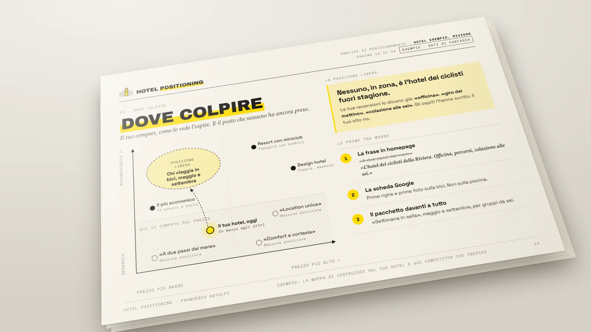

Gli ospiti non scelgono l’hotel migliore. Scelgono quello che sanno spiegare.
Un motivo preciso, dimostrato dalle parole dei vostri ospiti, per cui scegliere la vostra struttura e non quella accanto. Per hotel 4 e 5 stelle e resort che vogliono difendere la tariffa, non inseguirla.

- Veridia ResortChia · Sardegna
- Silva Splendid Hotel & SPAFiuggi
- Tocq HotelMilano
- Radisson Blu ChorusLifeBergamo
Nell’alta gamma l’indistinto costa più che altrove. Quando l’ospite non sa dire perché voi, confronta l’unica cosa che sa confrontare: il prezzo.
- i.
La tariffa media è ferma, mentre il prodotto migliora ogni anno.
Prezzo - ii.
Gli ospiti vi amano, ma nelle recensioni usano le parole di tutti.
Identità - iii.
Le OTA restano il primo canale, con la commissione che ne consegue.
Distribuzione - iv.
Agenzie diverse, stessi risultati: manca un brief che dica chi siete.
Comunicazione
La posizione non si inventa. Si sceglie, in sei passaggi e in quest’ordine.
- I.
Il bisogno
Il desiderio profondo che l’ospite vi chiede di soddisfare.
- II.
Le alternative
Quelle che ha davvero, comprese quelle che non sono hotel.
- III.
Le unicità
Fatti verificabili, letti nelle recensioni in cinque lingue.
- IV.
L’ospite giusto
Chi riconosce quel valore, ed esiste in numero sufficiente.
- V.
La categoria
Quella di cui potete essere il riferimento nella vostra destinazione.
- VI.
Il momento
Il trend da cavalcare, quando c’è. Tutto su una pagina: il Positioning Canvas.
Il sito è la pelle. Le recensioni sono l’osso.
Il metodo per esteso, nel libroDa «hotel 4 stelle con SPA» a L’Hotel Benessere di Fiuggi.
Centodiciotto camere, la SPA più grande del Lazio, la struttura più recensita della località. Diceva tutto a tutti. La scelta è stata un fatto al posto di un aggettivo, una categoria con l’articolo determinativo, e meno target, non di più.
Il risultato è di posizionamento e ristrutturazione insieme. Il posizionamento ha dato la direzione, gli investimenti l’hanno resa credibile. In quest’ordine.

Hotel Positioning. Come l’ospite sceglie un hotel, e perché non sceglie il vostro.
Il manuale di posizionamento alberghiero, con il Positioning Canvas compilato su un hotel vero, duecento attributi differenzianti e dodici vie per prendere posizione.
Vent’anni nell’ospitalità, da ogni lato del tavolo.
Distribuzione, catena, agenzia, e poi imprese con capitale proprio. Oggi Francesco Astolfi affianca un numero ristretto di strutture indipendenti, come consulente di posizionamento e fractional CMO. Il metodo è raccolto nel libro ed è stato presentato a Hospitality Day 2026.
Francesco Astolfi
- TUI.itDa zero a trenta milioni di fatturato, nel marketing
- Ata HotelsResponsabile marketing di un gruppo di venti hotel
- AgenziaDirezione di una web agency verticale sugli hotel
- RistorazioneYume Ramen ed Enzu: dieci locali, capitale proprio
- OggiVeridia, Silva Splendid, Tocq, Radisson Blu Bergamo
Tre modi di iniziare. Uno solo di metodo.
Revisione della homepage
La prima frase che legge l’ospite, smontata e riscritta. Una pagina, nessuna call.
Gratuita · sei al mese
Analisi di posizionamento
- Diagnosi del posizionamento attuale
- Mappa dei concorrenti veri
- Profili dell’ospite ideale
- Posizionamento proposto e prime azioni
Su candidatura · una alla settimana
Candidare la struttura →Advisory continuativo
Il posizionamento portato in campagne, CRM, richieste di preventivo, Google e OTA, a fianco della direzione.
Numero ristretto di strutture · su richiesta
La prossima struttura che analizzo potrebbe essere la vostra.
Bastano il nome della struttura, il sito e i due o tre concorrenti che vi preoccupano. Risposta entro 48 ore, anche quando la risposta è no.
Candidare la struttura → Nessuna telefonata di vendita. I dati restano riservati.